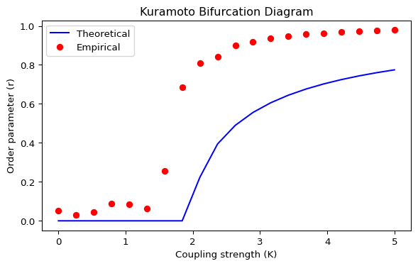
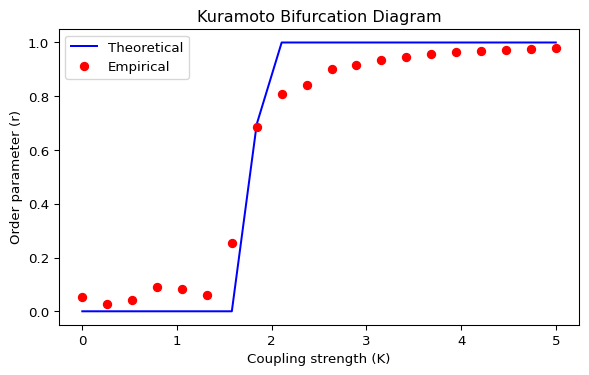
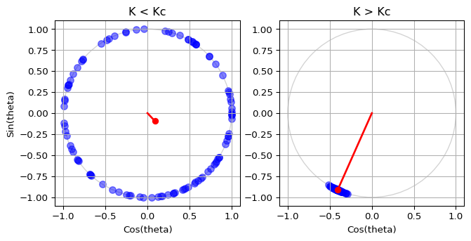

The order parameter \(r\) measures the coherence of the population. As coupling \(K\) increases, the system transitions from incoherent (\(r \approx 0\)) to synchronized (\(r > 0\)).
For a Cauchy distribution with scale \(\gamma\):
\[
K_c = \frac{2}{\pi g(0)}
\tag{1}\]
where \(g(\omega)\) is the probability density function of the natural frequencies. For a Cauchy distribution with scale parameter \(\gamma\):
In particular, \(g(0)=\frac{1}{\pi\gamma}\), so the critical coupling simplifies to
\[
K_c = 2\gamma
\tag{3}\]
The theoretical order parameter is:
\[
r(K)=
\begin{cases}
0, & K \le K_c \\
\sqrt{1-\frac{K_c}{K}}, & K > K_c
\end{cases}
\tag{4}\]
Warning: This exact formula only works for a Cauchy distribution!

Figure 1: Kuramoto diagram: theoretical curve from Equation 4 and empirical points (drawn from a normal distribution). Why is there a mismatch?
For any other distribution, the theoretical order parameter near onset is
\[
r \approx \sqrt{\frac{16}{\pi K_c^3}} \sqrt{\frac{\mu}{-g''(0)}}
\tag{5}\]
where \(\mu\) measures the distance from the critical point (a dimensionless reduced coupling) and \(g''(0)\) is the second derivative of the frequency distribution at \(0\).
\[
\mu = \frac{K - K_c}{K_c}
\tag{6}\]
This formula is derived from a perturbative analysis near the critical point and captures the square-root scaling of the order parameter as the coupling strength exceeds the critical value.
For a normal distribution with scale parameter (standard deviation) sigma:
In a new script, draw the theoretical bifurcation diagram for \(0 < K < 5\).
On top of it, draw the empirical curve, using \(N = 1000\) oscillators, \(dt = 0.01\), stopping at \(t = 100\) and averaging the order parameter (\(r\)) over the last ten steps.
Do your two curves match? The example in Figure 1 shows a mismatch. Can you explain why? Can you fix it? If you are stuck, check the solution below.
Why is there a mismatch?
The mismatch occurs because the closed-form theoretical curve Equation 4 is derived for a Cauchy frequency distribution, while the empirical data in Figure 1 is generated from a normal distribution.
To fix this you have two consistent options:
Keep the normal distribution and use a matching theoretical prediction (typically only an approximation near onset, e.g. Equation 5).
Keep the closed-form curve Equation 4 and generate the empirical data using a Cauchy distribution.

Figure 2: Kuramoto diagram: empirical points (normal frequencies) and a matching theoretical prediction (see Equation 5 for the near-onset scaling).
Alternatively, fix the mismatch by changing the empirical distribution to a Cauchy distribution, which matches the closed-form curve Equation 4.
Find the critical coupling \(K_c\) from the theoretical formula and check if it matches the empirical transition point in your simulations. You can estimate the empirical \(K_c\) by looking for the value of \(K\) where \(r\) starts to deviate significantly from zero. Or use then ear-onset scaling Equation 5 to fit the empirical data and extract an estimate of \(K_c\).
In your animation script from the previous page, try setting the coupling strength just below and just above the critical value to see the difference in the dynamics. You should see that below \(K_c\), the oscillators remain incoherent, while above \(K_c\), they start to synchronize and form a cluster on the unit circle.

Figure 4: Comparison between the theoretical critical coupling \(K_c\) and the empirical transition point observed in simulations. Individual oscillators are represented as blue dots, while the coupling strength is painted red.
What’s Next?
In the next page, we will merge the bifurcation diagram with the oscillator animation to create a full simulation of the Kuramoto model. This will allow us to see how the order parameter evolves in real time as we adjust the coupling strength and other parameters using sliders.
---title: "Kuramoto Model"subtitle: "Bifurcation Diagram"format: html---The order parameter $r$ measures the coherence of the population. As coupling $K$ increases, the system transitions from incoherent ($r \approx 0$) to synchronized ($r > 0$).For a Cauchy distribution with scale $\gamma$:$$K_c = \frac{2}{\pi g(0)}$$ {#eq-kuramoto-kc}where $g(\omega)$ is the probability density function of the natural frequencies. For a Cauchy distribution with scale parameter $\gamma$:$$g(\omega)=\frac{1}{\pi} \frac{\gamma}{\omega^2+\gamma^2}$$ {#eq-cauchy-density}In particular, $g(0)=\frac{1}{\pi\gamma}$, so the critical coupling simplifies to$$K_c = 2\gamma$$ {#eq-kc-cauchy}The theoretical order parameter is:$$r(K)=\begin{cases}0, & K \le K_c \\\sqrt{1-\frac{K_c}{K}}, & K > K_c\end{cases}$$ {#eq-r-cauchy}**Warning:** This exact formula only works for a Cauchy distribution!```{python}#| label: fig-kuramoto-bifurcation-bad#| fig-cap: 'Kuramoto diagram: theoretical curve from @eq-r-cauchy and empirical points (drawn from a normal distribution). Why is there a mismatch?'#| fig-width: 7#| fig-height: 4#| echo: falseimport numpy as npimport matplotlib.pyplot as pltfrom scipy.integrate import solve_ivpfrom amlab.odes_coupled.kuramoto import ( initialize_oscillators, kuramoto_ode_meanfield, kuramoto_order_parameter,)from amlab.odes_coupled.kuramoto_diagram import kuramoto_critical_couplingnum_oscillators =500scale =1.0kmin, kmax, knum =0.0, 5.0, 20ls_k = np.linspace(kmin, kmax, knum)r_theory = kuramoto_critical_coupling(ls_k, scale=scale, distribution="cauchy")theta, omega = initialize_oscillators(num_oscillators, distribution="normal", scale_omega=scale, seed=1)ls_r = np.zeros_like(ls_k)for idx, k inenumerate(ls_k): sol = solve_ivp(kuramoto_ode_meanfield, (0, 100), theta, t_eval=np.arange(0, 100, 0.01), args=(omega, k)) theta = np.mod(sol.y, 2* np.pi) r, _, _, _ = kuramoto_order_parameter(theta) ls_r[idx] = np.mean(r[-10:]) theta = theta[:, -1]fig, ax = plt.subplots(figsize=(7, 4))ax.plot(ls_k, r_theory, label="Theoretical", color="blue")ax.plot(ls_k, ls_r, "o", label="Empirical", color="red")ax.set_xlabel("Coupling strength (K)")ax.set_ylabel("Order parameter (r)")ax.set_title("Kuramoto Bifurcation Diagram")ax.legend()plt.show()plt.close()```For any other distribution, the theoretical order parameter near onset is$$r \approx \sqrt{\frac{16}{\pi K_c^3}} \sqrt{\frac{\mu}{-g''(0)}}$$ {#eq-r-near-onset}where $\mu$ measures the distance from the critical point (a dimensionless reduced coupling) and $g''(0)$ is the second derivative of the frequency distribution at $0$.$$\mu = \frac{K - K_c}{K_c}$$ {#eq-mu-def}This formula is derived from a perturbative analysis near the critical point and captures the square-root scaling of the order parameter as the coupling strength exceeds the critical value.For a normal distribution with scale parameter (standard deviation) sigma:$$g(\omega) = \frac{1}{\sqrt{2\pi}\sigma} \exp\left(-\frac{\omega^2}{2\sigma^2}\right)$$ {#eq-normal-density}$$g''(\omega) = \left( \frac{\omega^2}{\sigma^4} - \frac{1}{\sigma^2} \right) g(\omega)$$ {#eq-normal-second-derivative}## Python ImplementationIn a new script, draw the theoretical bifurcation diagram for $0 < K < 5$.On top of it, draw the empirical curve, using $N = 1000$ oscillators, $dt = 0.01$, stopping at $t = 100$ and averaging the order parameter ($r$) over the last ten steps.Do your two curves match? The example in @fig-kuramoto-bifurcation-bad shows a mismatch. Can you explain why? Can you fix it? If you are stuck, check the solution below.::: {.callout-tip collapse="true"}## Why is there a mismatch?The mismatch occurs because the closed-form theoretical curve @eq-r-cauchy is derived for a **Cauchy** frequency distribution, while the empirical data in @fig-kuramoto-bifurcation-bad is generated from a **normal** distribution.To fix this you have two consistent options:1. Keep the normal distribution and use a matching theoretical prediction (typically only an approximation near onset, e.g. @eq-r-near-onset).2. Keep the closed-form curve @eq-r-cauchy and generate the empirical data using a Cauchy distribution.```{python}#| label: fig-kuramoto-bifurcation-normal#| fig-cap: 'Kuramoto diagram: empirical points (normal frequencies) and a matching theoretical prediction (see @eq-r-near-onset for the near-onset scaling).'#| fig-width: 7#| fig-height: 4#| echo: falseimport numpy as npimport matplotlib.pyplot as pltfrom scipy.integrate import solve_ivpfrom amlab.odes_coupled.kuramoto import ( initialize_oscillators, kuramoto_ode_meanfield, kuramoto_order_parameter,)from amlab.odes_coupled.kuramoto_diagram import kuramoto_critical_couplingnum_oscillators =500scale =1.0kmin, kmax, knum =0.0, 5.0, 20ls_k = np.linspace(kmin, kmax, knum)r_theory = kuramoto_critical_coupling(ls_k, scale=scale, distribution="normal")theta, omega = initialize_oscillators(num_oscillators, distribution="normal", scale_omega=scale, seed=1)ls_r = np.zeros_like(ls_k)for idx, k inenumerate(ls_k): sol = solve_ivp(kuramoto_ode_meanfield, (0, 100), theta, t_eval=np.arange(0, 100, 0.01), args=(omega, k)) theta = np.mod(sol.y, 2* np.pi) r, _, _, _ = kuramoto_order_parameter(theta) ls_r[idx] = np.mean(r[-10:]) theta = theta[:, -1]fig, ax = plt.subplots(figsize=(7, 4))ax.plot(ls_k, r_theory, label="Theoretical", color="blue")ax.plot(ls_k, ls_r, "o", label="Empirical", color="red")ax.set_xlabel("Coupling strength (K)")ax.set_ylabel("Order parameter (r)")ax.set_title("Kuramoto Bifurcation Diagram")ax.legend()plt.show()plt.close()```Alternatively, fix the mismatch by changing the empirical distribution to a Cauchy distribution, which matches the closed-form curve @eq-r-cauchy.```{python}#| label: fig-kuramoto-bifurcation-cauchy#| fig-cap: 'Kuramoto diagram: theoretical curve @eq-r-cauchy and empirical points (Cauchy frequencies).'#| fig-width: 7#| fig-height: 4#| echo: falseimport numpy as npimport matplotlib.pyplot as pltfrom scipy.integrate import solve_ivpfrom amlab.odes_coupled.kuramoto import ( initialize_oscillators, kuramoto_ode_meanfield, kuramoto_order_parameter,)from amlab.odes_coupled.kuramoto_diagram import kuramoto_critical_couplingnum_oscillators =500scale =1.0kmin, kmax, knum =0.0, 5.0, 20ls_k = np.linspace(kmin, kmax, knum)r_theory = kuramoto_critical_coupling(ls_k, scale=scale, distribution="cauchy")theta, omega = initialize_oscillators(num_oscillators, distribution="cauchy", scale_omega=scale, seed=1)ls_r = np.zeros_like(ls_k)for idx, k inenumerate(ls_k): sol = solve_ivp(kuramoto_ode_meanfield, (0, 100), theta, t_eval=np.arange(0, 100, 0.01), args=(omega, k)) theta = np.mod(sol.y, 2* np.pi) r, _, _, _ = kuramoto_order_parameter(theta) ls_r[idx] = np.mean(r[-10:]) theta = theta[:, -1]fig, ax = plt.subplots(figsize=(7, 4))ax.plot(ls_k, r_theory, label="Theoretical", color="blue")ax.plot(ls_k, ls_r, "o", label="Empirical", color="red")ax.set_xlabel("Coupling strength (K)")ax.set_ylabel("Order parameter (r)")ax.set_title("Kuramoto Bifurcation Diagram")ax.legend()plt.show()plt.close()```:::## Validate Your FindingsFind the critical coupling $K_c$ from the theoretical formula and check if it matches the empirical transition point in your simulations. You can estimate the empirical $K_c$ by looking for the value of $K$ where $r$ starts to deviate significantly from zero. Or use then ear-onset scaling @eq-r-near-onset to fit the empirical data and extract an estimate of $K_c$.In your animation script from the previous page, try setting the coupling strength just below and just above the critical value to see the difference in the dynamics. You should see that below $K_c$, the oscillators remain incoherent, while above $K_c$, they start to synchronize and form a cluster on the unit circle.```{python}#| label: fig-kuramoto-bifurcation-validate#| fig-cap: 'Comparison between the theoretical critical coupling $K_c$ and the empirical transition point observed in simulations. Individual oscillators are represented as blue dots, while the coupling strength is painted red.'#| fig-width: 7#| fig-height: 4#| echo: falseimport matplotlib.pyplot as pltimport numpy as npfrom scipy.integrate import solve_ivpfrom amlab.odes_coupled.kuramoto import kuramoto_ode_meanfield# Parametersk_low =0.1k_high =10.0t_span = (0, 100)num_oscillators =100scale_omega =0.5scale_phase =1.0seed =1# Initialize oscillatorstheta, omega = initialize_oscillators( num_oscillators, distribution="normal", scale_omega=scale_omega, scale_phase=scale_phase, seed=seed)# Run the simulation for low Ksol = solve_ivp( kuramoto_ode_meanfield, t_span, theta, args=(omega, k_low) )theta_klow = sol.y[:, -1]x_klow = np.cos(theta_klow)y_klow = np.sin(theta_klow)_, _, rcosphi_klow, rsinphi_klow = kuramoto_order_parameter(theta_klow)# Run the simulation for high Ksol = solve_ivp( kuramoto_ode_meanfield, t_span, theta, args=(omega, k_high) )theta_khigh = sol.y[:, -1]x_khigh = np.cos(theta_khigh)y_khigh = np.sin(theta_khigh)_, _, rcosphi_khigh, rsinphi_khigh = kuramoto_order_parameter(theta_khigh)fig, axs = plt.subplots(1, 2, figsize=(7, 4))axs[0].set_title("K < Kc")axs[0].set_xlabel("Cos(theta)")axs[0].set_ylabel("Sin(theta)")axs[0].set_xlim(-1.1, 1.1)axs[0].set_ylim(-1.1, 1.1)axs[0].set_aspect("equal")axs[0].grid(True)# Draw unit circle (optional, but it helps to visualize the boundary)circle = plt.Circle((0, 0), 1, color="lightgray", fill=False)axs[0].add_artist(circle)axs[0].scatter(x_klow, y_klow, s=50, color="blue", alpha=0.5)axs[0].plot( [0, rcosphi_klow], [0, rsinphi_klow], color="red", linewidth=2 )axs[0].plot( [rcosphi_klow], [rsinphi_klow],"ro", markersize=6 )axs[1].set_title("K > Kc")axs[1].set_xlabel("Cos(theta)")# axs[1].set_ylabel("Sin(theta)")axs[1].set_xlim(-1.1, 1.1)axs[1].set_ylim(-1.1, 1.1)axs[1].set_aspect("equal")axs[1].grid(True)circle = plt.Circle((0, 0), 1, color="lightgray", fill=False)axs[1].add_artist(circle)axs[1].scatter(x_khigh, y_khigh, s=50, color="blue", alpha=0.5)axs[1].plot( [0, rcosphi_khigh], [0, rsinphi_khigh], color="red", linewidth=2 )axs[1].plot( [rcosphi_khigh], [rsinphi_khigh],"ro", markersize=6 )plt.tight_layout()plt.show()plt.close()```## What's Next?In the next page, we will merge the bifurcation diagram with the oscillator animation to create a full simulation of the Kuramoto model. This will allow us to see how the order parameter evolves in real time as we adjust the coupling strength and other parameters using sliders.[Full Simulation](kuramoto-full.qmd){.btn .btn-primary}